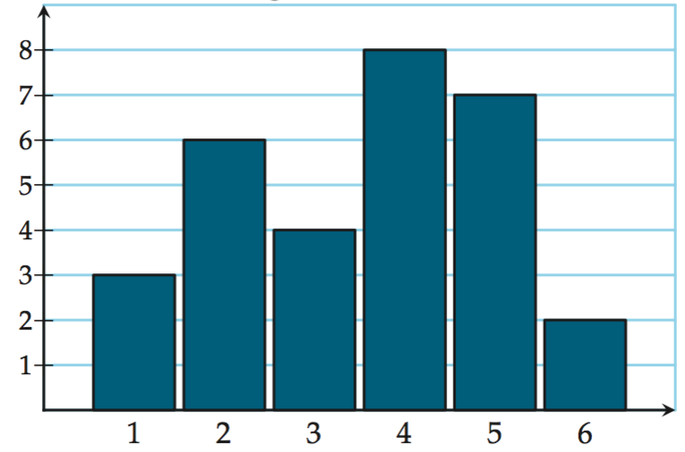
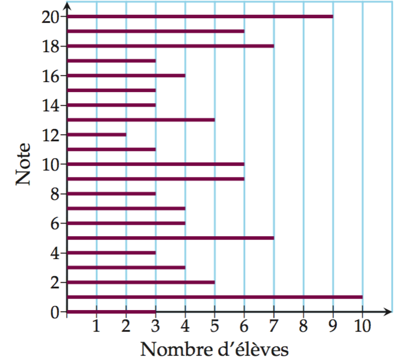

|
Le tableau ci-contre indique la répartition du nombre d’enfasnts de moins de 25 ans dans les familles des Bouches-du-Rhône en 1999 et 2009.
Construire un tableau avec les fréquence d'apparition en pourcentages (arrondir au dixième)
Construire un diagramme en barres comparatif de 1999 et 2009.
|
Nombre de famille avec & 2009 & 1999 ||
Aucun enfant & $244\;918$ & $220\;109$ ||
$1$ enfant & $131\;271$ & $124\;597$ ||
$2$ enfants & $109\;776$ & $102\;135$ ||
$3$ enfants & $35\;907$ & $35\;708$ ||
$4$ enfants et plus & $13\;311$ & $14\;564$ ||
Total & $535\;183$ & $497\;113$
|
|
On a demandé à un groupe d'élèves de donner leur âge. Les réponses sont rassemblées ci-contre.
Déterminer la médiane (*{bold;tdu::effectif total impair}) en ordonnant la série statistique.
|
$16$; $15$; $15$; $16$; $17$; $16$; $18$; $18$; $16$; $17$; $17$; $15$; $16$; $17$; $16$; $17$; $18$; $16$; $15$; $18$; $17$ |
|
On a demandé à un groupe d'élèves de donner leur âge. Les réponses sont rassemblées ci-contre.
Déterminer la médiane (*{bold;tdu::effectif total pair}) en ordonnant la série statistique.
|
$15$; $16$; $17$; $15$; $17$; $15$; $16$; $18$; $18$; $15$; $16$; $17$; $17$; $15$; $15$; $16$; $18$; $17$ |
|
Les résultats d’un contrôle de vitesse dans une agglomération (vitesse limitée à $50\;km/h$) sont consignés dans le tableau ci-contre.
Déterminer la médiane en construisant un tableau avec les fréquences d'apparition en pourcentages et les *{bold::fréquences cumulées croissantes} d'apparition en pourcentages.
|
Vitesse en $km/h$ & Effectif ||
$[20;50[$ & $104$ ||
$[50;70[$ & $54$ ||
$[70;80[$ & $13$ ||
$[80;90[$ & $7$ ||
$[90;100[$ & $5$ ||
$[100;130]$ & $2$
|
|
Le tableau ci-contre indique la pointure d'un groupe d'élèves
Déterminer la médiane en construisant le polygone des *{bold::fréquences cumulées croissantes} d'apparition en pourcentages.
|
Pointure & Effectif ||
$35$ & $78$ ||
$36$ & $82$ ||
$37$ & $43$ ||
$38$ & $21$ ||
$39$ & $17$ ||
$40$ & $5$
|
|
Le montant des dépenses (en euros) de chaque client lors d’une journée de soldes a été relevé et trié dans le tableau ci-contre.
Déterminer la médiane, le premier et troisième quartiles en construisant un tableau avec les fréquences d'apparition en pourcentages et les *{bold::fréquences cumulées croissantes} d'apparition en pourcentages.
|
Dépense en € & Nombre de clients ||
$[10;30[$ & $46$ ||
$[30;50[$ & $74$ ||
$[50;70[$ & $28$ ||
$[70;90[$ & $62$ ||
$[90;110[$ & $31$ ||
$[110;130]$ & $19$
|
|
Une enquête réalisée auprès d’un groupe d’élèves pour connaître le nombre d’enfants présents dans leur foyer est représentée par le graphique ci-contre.
Déterminer une approximation de la médiane, du premier et troisième quartiles en construisant *{bold::le polygone des fréquences cumulées croissantes} d'apparition en pourcentages.
|
 |
|
Voici les notes au dernier contrôle commun de trois classes de 2e du Lycée de Mathyville.
Déterminer la médiane, le premier et troisième quartiles en construisant un tableau avec les fréquences d'apparition en pourcentages et les *{bold::fréquences cumulées croissantes} d'apparition en pourcentages.
|
 |
|
Une entreprise vend des boîtes de $100\;g$ de maqueraeaux et effectue des relevés de masse.
Déterminer une approximation de la médiane, du premier et troisième quartiles en construisant *{bold::le polygone des fréquences cumulées croissantes} d'apparition en pourcentages.
|
Masse en $g$ & Nombre de boîtes ||
$[95;97[$ & $2$ ||
$[97;99[$ & $4$ ||
$[99;101[$ & $26$ ||
$[101;103[$ & $95$ ||
$[103;105[$ & $69$ ||
$[105;107]$ & $4$
|